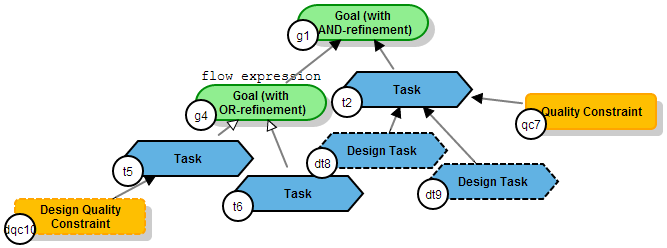

This is a prototype tool developed to evaluate a framework for deriving architectural models from requirements models. It is a prototype, so please proceed with caution and report any bugs you find.
The edition of the goal model is based on pointing the mouse over an element of the model. As you point it, buttons related to that element will appear, so that you can add new elements. Alternatively, you can point the element and press one of the shortcuts.
In the requirements mode, you can add/remove goals, tasks, quality constraints, and domain assumptions.
Here you can add/remove design tasks, design constraints, and design assumptions. In other words, elements that are not requirements themselves, but are relevant for the system design.
In the behavior mode you cannot edit the model itself, just the flow expressions of the elements. To edit the flow expression of a element, point the mouse over the element and press 'e'.
To make the most of the tool, press F11 and run the browser in full screen mode.

For further details on the modelling notation, the flow expressions, and the framework, see this thesis.
When you click in the 'Save SVG' or 'Save PNG' button, the current view of the model will be downloaded. If the statechart diagram is currently being displayed, these buttons will download an image of the statechart.
You like your texts big, but they don't fit the element's shape? Try using a dot ('.') when writing the text to include a line break at that point
Chrome is the safest option to use this tool.
By clicking the Analyze Model button in the toolbar you can find out:
Once you have annotated your goal model with flow expressions (Behavior refinement view), you can generate a statechart diagram from the derivation tab.
You can find valid examples of goal models to be loaded into the tool here.
This tool was created by João Pimentel to support the process created during his PhD in Computer Science. Papers that explain the process or the tool are available here.
The following open-source libraries and frameworks are used in this tool: